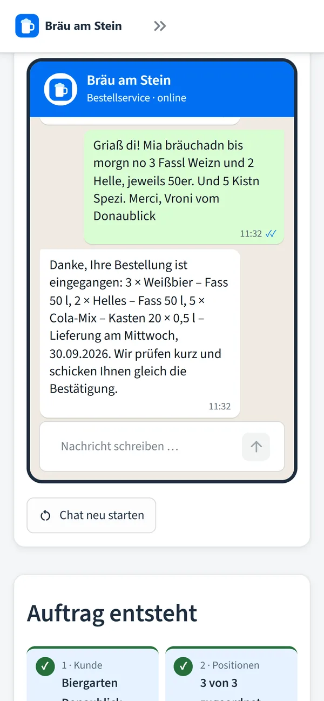
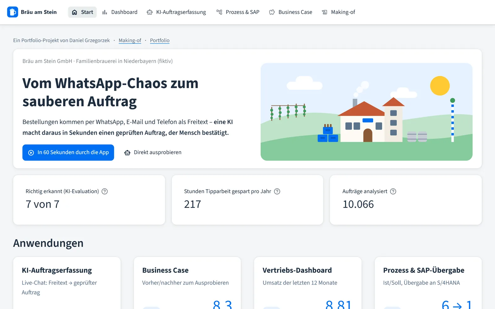
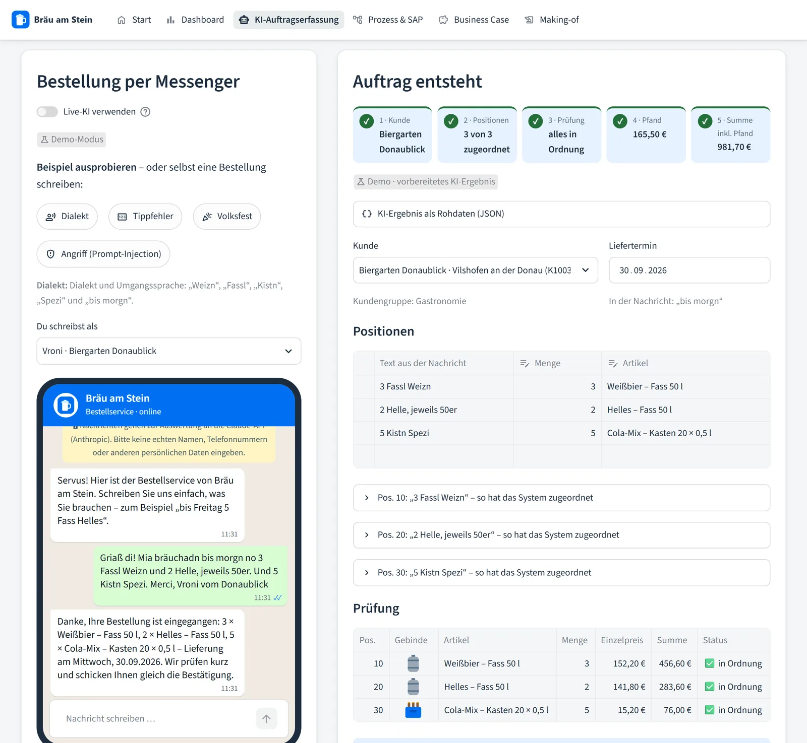
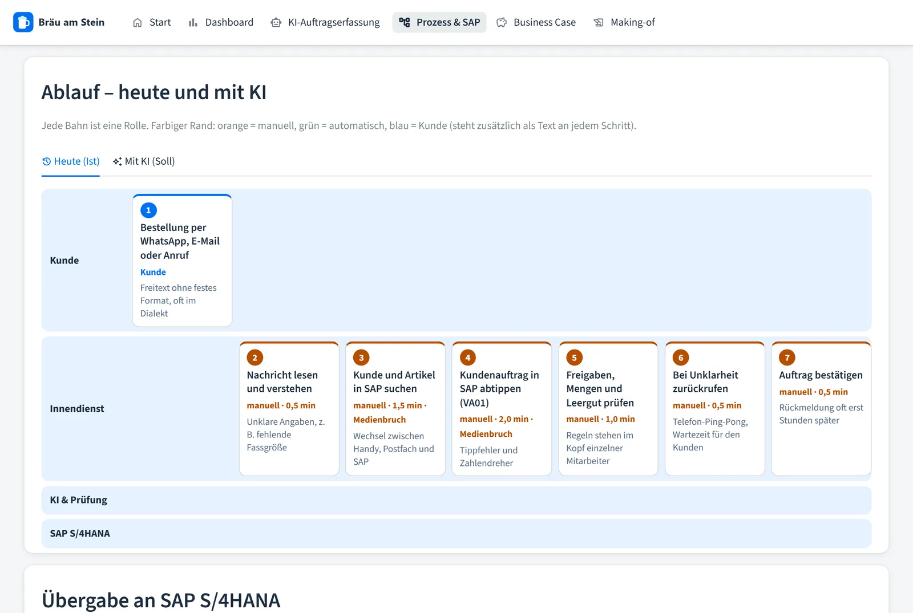
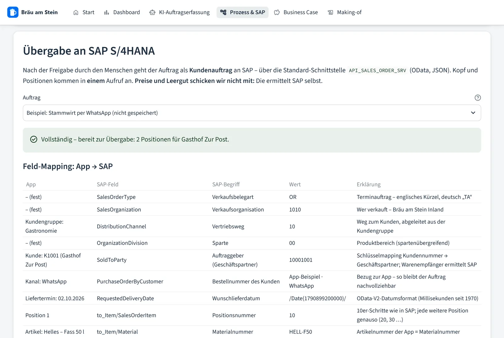
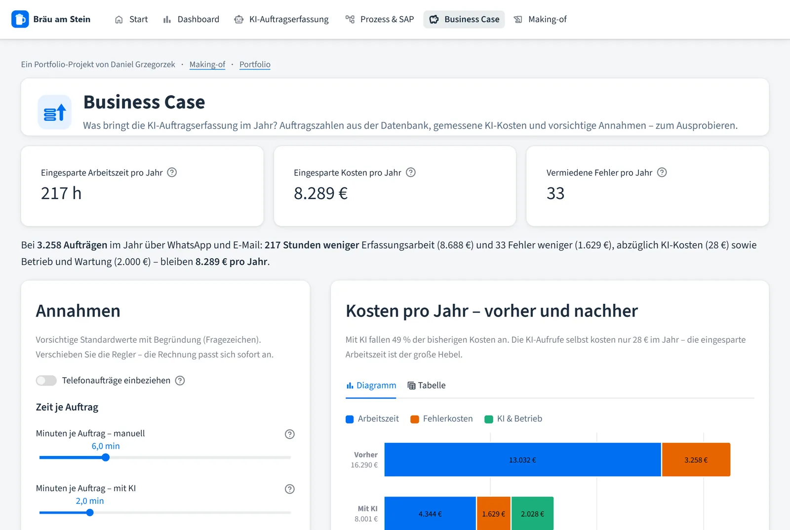
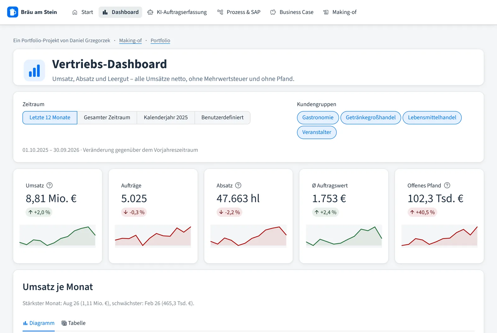

Wirtschaftsinformatik (B.Sc.) · SAP · KI · Daten
Daniel Grzegorzek
Ich verbinde Geschäftsprozesse, SAP und KI – und suche den Direkteinstieg in SAP-/ERP-Beratung, AI Automation oder Data Analytics. Was ich damit meine, zeigt meine Arbeitsprobe.
Auf einen Blick
Was die Arbeitsprobe zeigt
Wählen Sie einen Schwerpunkt – die passenden Highlights rücken nach vorn.
-
7 von 7
Gemessen statt geglaubt
Eine Evaluation prüft die KI an sieben Bestellungen – vom ersten Lauf mit 4 von 7 bis 7 von 7, dazu ein Modellvergleich mit vorab festgelegter Regel.
-
6 → 1
Prozess heute und mit KI
Schwimmbahnen für Ist und Soll: Aus sechs manuellen Schritten mit zwei Medienbrüchen wird ein Prüfschritt.
-
10.066
Vertriebs-Dashboard
Umsatz, Saison und offenes Pfand aus zwei Jahren simulierter Aufträge – mit berechneter Kernaussage und Tabelle zu jedem Diagramm.
-
KI + Code
Die KI versteht, der Code entscheidet
Claude übersetzt Freitext und Dialekt in ein festes Format. Artikel, Preise und Regeln prüft getesteter Code – ein Mensch bestätigt.
-
S/4HANA
Übergabe als Kundenauftrag
Feld-Mapping auf die Standard-API
API_SALES_ORDER_SRVmit Vollständigkeitsprüfung – bewusst ohne Preise und Leergut, die ermittelt SAP selbst. -
≈ 8.300 €
Business Case aus Daten
3.258 Aufträge pro Jahr aus der Datenbank, gemessene KI-Kosten, vorsichtige Annahmen als Regler: rund 217 Stunden Ersparnis im Jahr.
-
< 1 Cent
Sicher und bezahlbar
Ein Angriff per Prompt-Injection wird sichtbar abgewehrt, ein Kostenschutz begrenzt Aufrufe je Besuch und Tag.
-
13 Prüfungen
Datenmodell wie im ERP
Stamm- und Bewegungsdaten, Aufträge mit Kopf und Positionen, Leergut als einzelne Bewegungen – dazu 13 fachliche Plausibilitätsprüfungen der Daten.
Fallstudie
Bräu am Stein: vom WhatsApp-Chaos zum sauberen Auftrag
Eine KI-gestützte Auftragserfassung für eine fiktive Familienbrauerei in Niederbayern – von der Bestellung im Dialekt bis zum Kundenauftrag für SAP S/4HANA.

-
01Problem
Die Brauerei bekommt rund 5.000 Bestellungen im Jahr per WhatsApp, E-Mail und Telefon – als Freitext, oft im Dialekt: „Mia bräuchadn bis morgn no 3 Fassl Weizn …“. Der Innendienst tippt jede Bestellung ab, ergänzt Fehlendes und rechnet das Pfand. Das kostet Zeit und ist fehleranfällig, besonders in der Hochsaison.
-
02Vorgehen
In sieben Phasen: erst realistische Daten über zwei Jahre mit Saison und Leergut, dann Dashboard und Demo-Modus, früh online – danach echte KI mit Evaluation, Business Case und die Übergabe an SAP. Jede Phase habe ich geprüft und abgenommen, bevor die nächste begann.
-
03Entscheidungen
- Die KI versteht nur – Artikel, Preise und Regeln stehen in getestetem Code.
- Ein Mensch bestätigt: Gespeichert wird erst nach seinem Klick, bei Fehlern gar nicht.
- Demo-Modus ohne Schlüssel, damit jeder die App kostenlos ausprobieren kann.
- Modellwahl mit Messung: Das günstigere Modell kam auf 6 von 7 – also blieb das genauere.
- SAP-Übergabe über die Standard-API, ohne Preise und Leergut – die ermittelt SAP selbst.
Alle Entscheidungen mit Begründung und verworfener Alternative: docs/ENTSCHEIDUNGEN.md
-
04Ergebnis
7 von 7Beispielbestellungen richtig erkannt≈ 217 hweniger Tipparbeit pro Jahr, vorsichtig gerechnet< 1 CentKI-Kosten je Auftrag, gemessen249automatische Tests -
05Gelernt
- Messen statt glauben: Die meisten Fehler lagen nicht in der KI, sondern im Code drumherum.
- Regeln gehören in Code: nachvollziehbar, testbar und unabhängig vom Modell.
- „Lokal grün“ heißt nicht „online grün“: Nach jedem Update prüfe ich die Live-App.






Arbeitsweise
Wie ich mit KI arbeite
Den Code der Arbeitsprobe hat Claude Code geschrieben, ein KI-Werkzeug von Anthropic. Meine Aufgabe war, das Richtige bauen zu lassen und sicherzustellen, dass es stimmt.
-
01
Steuern
Ich lege Szenario, Anforderungen und Geschäftsregeln fest und arbeite in kleinen Schritten – ein Commit pro Schritt, jede Entscheidung mit Begründung dokumentiert.
Beispiel: Den Demo-Modus habe ich von Anfang an zur Pflicht gemacht, damit jeder die App ohne Schlüssel und ohne Kosten testen kann.
-
02
Prüfen
Jede Phase nehme ich im Browser ab – hell und dunkel, am Desktop und auf dem Handy. Dazu kommen automatische Tests und Code-Reviews mit Gegenprüfung.
Beispiel: Beim Schreiben der Making-of-Seite fiel auf, dass der Bestellschluss um 14 Uhr, den ich als Regel nennen wollte, noch gar nicht umgesetzt war. Erst eingebaut, dann beschrieben.
-
03
Messen statt glauben
Ob die KI gut arbeitet, entscheidet eine Messung, nicht ein Eindruck – und ein Modellwechsel nur mit einer Regel, die vorher feststeht.
Beispiel: Der erste Lauf ergab 4 von 7. Die Fehler lagen im Kundenabgleich und in der Datumsrechnung – nach zwei gezielten Änderungen: 7 von 7.
Was ich daraus mitnehme: KI macht mich schnell, aber die Verantwortung für Anforderungen, Qualität und Ergebnis bleibt beim Menschen – genau wie in der App selbst.
Über mich
Zwischen Prozess, System und Daten
Ich habe Wirtschaftsinformatik an der Universität Passau studiert. Mich reizt die Stelle, an der aus einer fachlichen Anforderung ein funktionierender Ablauf im System wird – und an der Daten zeigen, ob er wirkt.
- Studium
- Wirtschaftsinformatik (B.Sc.), Universität Passau
- Praxismodul
- SAP Fiori und RAP (ABAP RESTful Application Programming Model) mit der msg systems ag – Note 1,3
- Daten
- Python-Datenanalyse – Note 1,3
- Sprachen
- Deutsch, Englisch, Polnisch
- Außerdem
- Beachvolleyball-Trainer im Hochschulsport

Kontakt
Lassen Sie uns sprechen
Ich freue mich über Ihre Nachricht – am liebsten per E-Mail oder über LinkedIn.